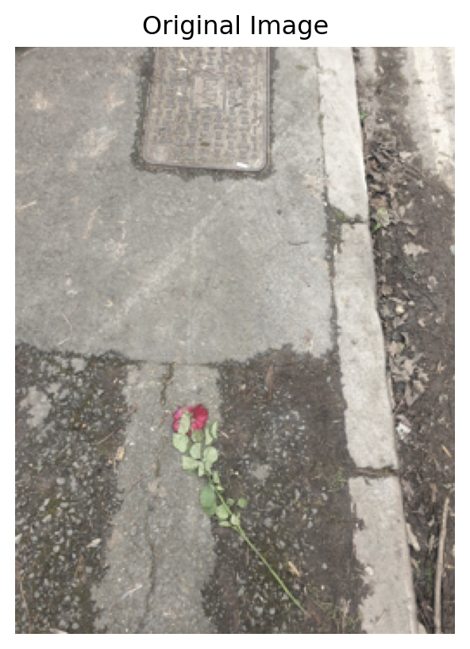
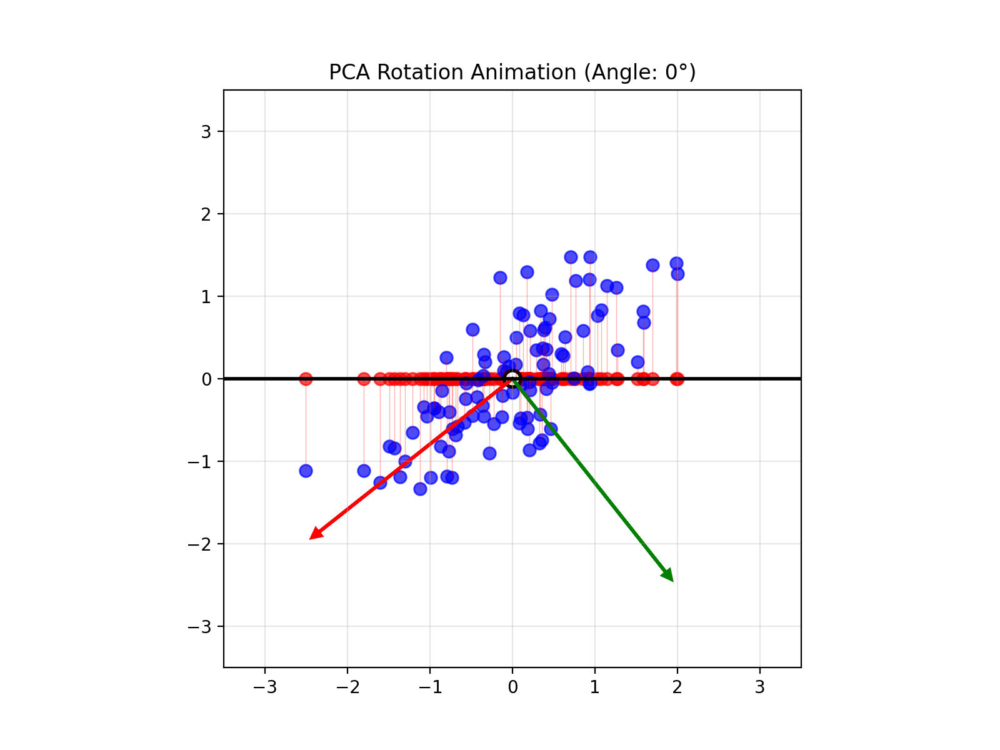
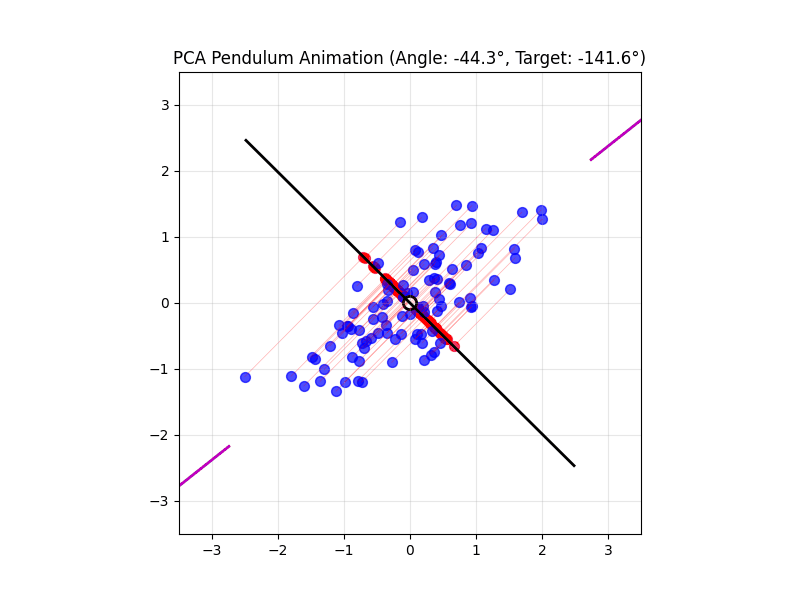

Number of pairwise plots for 5 features: 10
Number of pairwise plots for 14 features: 91
Number of pairwise plots for 1000000 features: 4999995000004 Introduction to Unsupervised Learning
TipLearning Objectives
By the end of this module, learners will be able to:
Define unsupervised learning and explain how it differs from supervised learning in terms of inputs, outputs, and goals.
Identify common unsupervised techniques, including clustering (e.g., k‑means, hierarchical) and dimensionality reduction (e.g., PCA), and describe when each is appropriate.
Discuss real‑world applications of unsupervised learning, such as customer segmentation, anomaly detection, and image compression.
Explain the role of unsupervised learning in exploratory data analysis.
Interpret principal component analysis (PCA) intuitively to understand how PCA finds the directions of greatest variance in data.
Apply dimensionality reduction to a simple multivariate dataset (e.g., crime rates and population by state) to visualize high‑dimensional data in two or three dimensions.
Differentiate unsupervised from supervised problems by examining datasets and deciding whether the task is to uncover patterns versus predict a known target variable.
Articulate the value of unsupervised learning in uncovering hidden structure in unlabelled data and its importance as data complexity grow.
4.1 Setup instructions
Please go through the setup instructions here
Walkthrough of getting setup with Google Colab in the web browser.
4.2 Poll
What would you like to get out this course?
4.3 Introduction
Unsupervised learning is a branch of machine learning that deals with finding hidden patterns or intrinsic structures in data without the use of labeled responses. Unlike supervised learning, where the model learns from labeled data to predict outcomes, unsupervised learning works with input data that does not have any corresponding output variables. The primary goal is to explore the underlying structure, groupings, or features in the data.
One of the most common applications of unsupervised learning is clustering, where the algorithm groups similar data points together based on their characteristics. This is particularly useful in scenarios such as customer segmentation, anomaly detection, and image compression. Another key technique is dimensionality reduction, which aims to reduce the number of variables under consideration, making it easier to visualize and interpret large datasets.
Unsupervised learning is valuable because it can reveal insights that may not be immediately apparent, uncovering relationships and patterns that might otherwise go unnoticed. It is commonly used in exploratory data analysis and as a preprocessing step for other algorithms. As data continues to grow in complexity and volume, unsupervised learning plays a critical role in making sense of unstructured information.
4.3.1 Motivation
Here is a picture (taken by Soumya Banerjee) of a pavement in Cambridge the day after Valentine’s Day. Why did this picture capture my attention? The starkness of the grey pavement contrasted with the bright red rose. It may have triggered some unsupervised learning mechanism in my brain that allows me to pick anomalies!

Unsupervised learning is all about discovering structure in data without any explicit “right answers” to guide you. The rose‑on‑pavement photo is a perfect real‑world illustration of a few core ideas:
Anomaly (or Outlier) Detection
What happened in your brain:
When you look at a uniform grey pavement, your visual system builds an internal “model” of what is normal: flat, texture‑repeating, monochrome. The bright red rose doesn’t fit that model, so it “pops,” drawing your attention.In machine learning:
Algorithms can learn a representation of “normal” data (e.g. patches of pavement) and then flag anything that deviates significantly (e.g. the rose) as an anomaly.Human vision analogy:
Early in the visual cortex, neurons respond to edges, color contrasts, textures. A red circle on grey evokes strong responses in “color” and “shape‑edge” channels.
4.3.2 Example
Given the data below, how should we reduce the number of features and/or visualize it? This is an unsupervised machine learning problem.
Tip
NOTE (IMPORTANT CONCEPT): The columns of this data are the features.
| State | Murder (per 100k) | Robbery (per 100k) | Population |
|---|---|---|---|
| California | 9.1 | 45.3 | 39,512,223 |
| Texas | 7.8 | 38.6 | 28,995,881 |
| Florida | 5.9 | 31.7 | 21,477,737 |
| New York | 3.4 | 26.4 | 19,453,561 |
| Illinois | 6.4 | 35.1 | 12,671,821 |
| Pennsylvania | 4.8 | 22.9 | 12,801,989 |
Tip
NOTE (IMPORTANT CONCEPT): Importantly, in unsupervised machine learning we are not trying to predict anything. For example, say in the data below we can try to predict the number of people who moved to that state last year. This would be a supervised machine learning problem (Gareth et al. 2017).
| State | Murder (per 100k) | Robbery (per 100k) | Population | People Who Moved (per 100k) |
|---|---|---|---|---|
| California | 9.1 | 45.3 | 39,512,223 | 5,400 |
| Texas | 7.8 | 38.6 | 28,995,881 | 4,100 |
| Florida | 5.9 | 31.7 | 21,477,737 | 6,200 |
| New York | 3.4 | 26.4 | 19,453,561 | 3,800 |
| Illinois | 6.4 | 35.1 | 12,671,821 | 2,900 |
| Pennsylvania | 4.8 | 22.9 | 12,801,989 | 2,500 |
Tip
NOTE (IMPORTANT CONCEPTS):
If there is a column in the table that we are trying to predict, this would be called a label. Supervised machine learning (such as linear regression) tries to predict the label given the features (Gareth et al. 2017).
However in unsupervised machine learning, we only deal with features and do not try to predict anything.
Hence there are no labels in unsupervised machine learning.
Tip
NOTE (IMPORTANT CONCEPTS):
The number of columns in the data, is called the dimensions of the data.
For example, if there are 3 columns, this is 3-dimensional data.
We can visualize it in 3 dimensions in a 3D plot.
Hence the columns of the data or dimensions form a co-ordinate system. We can visualize it in a plot. The X axis would represent the value in the first column, the Y axis would represent the values in the second column, and so on.
How would you visualize a table that has 14 columns/dimensions?
4.4 Curse of dimensionality
How would you visualize data that has 14 dimensions? How about 1 million dimensions (can happen in the age of big data)?
Would you remove one column at a time?
Would you plot each feature/column vs the other exhaustively? How many pairwise plots would you need to plot for exhaustive visualization?
HintHint

You will have an exponential blowup! So this approach will not work.
We need something more principled.
Tip
NOTE (IMPORTANT CONCEPT)
It is not possible to exhaustively plot one feature vs. another or remove any feature randomly. For example, in a dataset from patient healthcare records, we cannot just randomly throw away data on blood pressure.
This is why we use dimensionality reduction to reduce the dimensions of the data. This yields fewer new features.
4.5 What PCA does to the data
4.5.1 Projection of 3D Data
We generate three clusters of synthetic 3‑dimensional points, compute the first two principal components using scikit‑learn’s PCA, and then create a two‑panel figure:
- Left panel: A 3D scatter of the original points, the best‐fit plane defined by the first two principal components, and projection lines from each point down onto that plane.
- Right panel: A 2D scatter of the projected coordinates (the principal component scores) along the first two components, colored by cluster.
Use this visualization to understand how PCA finds the plane that maximizes variance and how the data look when reduced to two dimensions.

- Play around with the figure below to get an intuition of what PCA does!
4.6 Another intuition behind PCA
Principal Component Analysis (PCA) reduces the number of dimensions in your data by finding the directions where the data varies the most and keeping only those directions.
Imagine you have a book: it has length, width, and height. But if the book is very thin, almost all of its size or volume is in the length and width—the height is so small that you can almost ignore it. If you wanted to describe where the book is on a table, you could just use two numbers (length and width), and you wouldn’t lose much information by ignoring the height.
PCA works the same way: it finds the thin directions in your data that do not add much information, and lets you focus on the most important dimensions. This makes it easier to visualize and analyze your data without losing the main patterns.
Tip
NOTE (IMPORTANT CONCEPT)
Say your data has too many columns/dimensions/features. Dimensionality reduction techniques (such as PCA) reduce the number of dimensions or the number of columns in your data.
4.7 Coming back to the crime data
- Original Data (4 Features)
Our crime dataset has 4 features (dimensions) for each state:
| State | Murder (per 100k) | Robbery (per 100k) | Population | People Who Moved (per 100k) |
|---|---|---|---|---|
| California | 9.1 | 45.3 | 39,512,223 | 5,400 |
| Texas | 7.8 | 38.6 | 28,995,881 | 4,100 |
| Florida | 5.9 | 31.7 | 21,477,737 | 6,200 |
| New York | 3.4 | 26.4 | 19,453,561 | 3,800 |
| Illinois | 6.4 | 35.1 | 12,671,821 | 2,900 |
| Pennsylvania | 4.8 | 22.9 | 12,801,989 | 2,500 |
4.8 What PCA Does
PCA finds new features (called Principal Components) that are combinations of the original features. These new features capture the most important patterns in the data.
4.9 After PCA: Reduced to 2 New Features
PCA transforms our data into Principal Components (PC1 and PC2). These are the new, reduced features:
| State | PC1 (Primary Pattern) | PC2 (Secondary Pattern) | Variance Explained |
|---|---|---|---|
| California | 3.45 | 0.82 | PC1: 68% |
| Texas | 2.18 | -0.15 | PC2: 23% |
| Florida | 1.35 | 1.24 | Total: 91% |
| New York | 0.92 | -1.05 | |
| Illinois | 0.31 | 0.18 | |
| Pennsylvania | -0.22 | -0.94 |
4.10 What Did We Gain?
4.10.1 Before PCA:
- 4 features to track and visualize
- Hard to see overall patterns
- Features may be correlated (redundant information)
4.10.2 After PCA:
- 2 features capture 91% of the information
- Easier to visualize (can plot in 2D)
- New features are uncorrelated
- Lost only 9% of information
4.11 What Do the Principal Components Mean?
PC1 (Primary Pattern): Combines all 4 original features with different weights. States with high PC1 values (like California) tend to have high values across multiple original features.
PC2 (Secondary Pattern): Captures the remaining variation not explained by PC1. This might separate states based on different combinations of the original features.
Key Insight: PC1 and PC2 are weighted combinations like: - PC1 = 0.45×Murder + 0.48×Robbery + 0.52×Population + 0.54×Migration - PC2 = 0.62×Murder - 0.15×Robbery - 0.68×Population + 0.35×Migration
(These weights are determined by the data patterns, not chosen arbitrarily)
4.12 PCA is lossy
PCA does lose some information. But it can capture some/most of the salient aspects of your data.
Tip
NOTE (IMPORTANT CONCEPT)
Dimensionality reduction techniques (such as PCA) always lose some information. In other words, it is lossy.
4.12.1 Lesson on lossy compression (PCA applied to image)
4.12.2 Learning Objectives
- Understand how Principal Component Analysis (PCA) can be applied to images.
- Observe how PCA captures the most significant patterns in image data.
- Visualize how the number of principal components affects image reconstruction.
- Appreciate the trade-off between compression and information loss.
4.12.3 Key Concepts
- PCA is a dimensionality reduction technique that identifies directions (principal components) along which the variance in the data is maximized.
- Images can be viewed as high-dimensional data (each pixel as a feature), and PCA helps reduce that dimensionality while preserving key patterns.
4.12.4 Procedure Overview
- Load and display an image from a URL.
- Apply PCA to each RGB channel of the image separately.
- Reconstruct the image using an increasing number of principal components.
- Visualize the reconstructions to show how few components capture most of the image’s structure.


4.12.5 Takeaway Message
PCA can significantly reduce image data dimensionality while preserving salient features, making it a powerful tool for image compression and understanding. However, perfect reconstruction is only possible with all components, revealing the balance between efficiency and fidelity.
TipKey Concept

In unsupervised learning, the bottleneck concept refers to a deliberate constraint where information is compressed through a narrow intermediate step. The model is trained to reconstruct the input data after passing it through this low-dimensional bottleneck, forcing it to learn a compact and informative representation of the underlying structure of the data.
Note: The figure shows features coming in from the right and getting compressed to fewer (new) features. What is not shown is that there are multiple rows in the dataset.
Since there are no labels guiding the learning process, the model relies solely on reconstructing its input as accurately as possible, using only the limited information passed through this narrow channel. This compression encourages the model to capture essential features while discarding noise or redundancy.
Because the computer must recreate the original image from that stripped‑down summary, it learns to ignore random noise.
TipActivity: Playable version of PCA in browser
4.13 Visual explanations of PCA

TipIntuition
- PCA maximimizes the variance captured

- App to explain the intuition behind PCA


4.14 Lesson Summary
Basics of unsupervised learning
Useful for visualization, outlier detection and making sense of your data if there are many features
What it is: Discover hidden patterns or groupings in unlabeled data, without predicting a specific target.
Key techniques:
- Clustering for grouping similar observations
- Dimensionality reduction (e.g. PCA) for compressing and visualizing high‑dimensional data
- Clustering for grouping similar observations
Why it matters:
- Reveals structure in customer segmentation, anomaly detection, image compression, etc.
- Serves as exploratory analysis and preprocessing for downstream tasks
- Reveals structure in customer segmentation, anomaly detection, image compression, etc.
Information bottleneck: Forcing models to squeeze data through a narrow bottleneck uncovers the most essential features and removes noise
Hands‑on example: Apply PCA to crime‑and‑population data by state to project three features into two dimensions for visualization
Unsupervised vs. supervised:
- Unsupervised: No labels, focus on pattern discovery
- Supervised: With labels, focus on predicting a known outcome
- Unsupervised: No labels, focus on pattern discovery